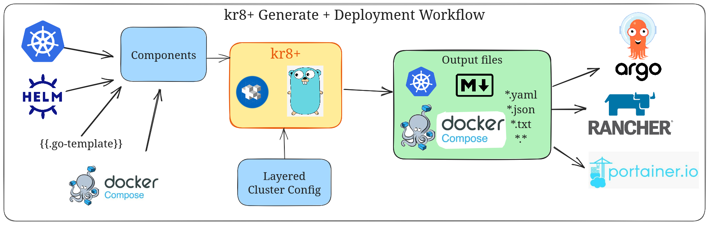

kr8+
kr8+ is an opinionated Kubernetes cluster configuration management tool designed to simplify and standardize the process of managing Kubernetes clusters. By leveraging best practices and providing a structured approach, kr8+ helps DevOps teams streamline their workflows and maintain consistency across multiple environments.
kr8+ consists of:
- kr8+ - A Go binary for rendering manifests
- go-jsonnet
v0.20.0 - ghodss/yaml
v1.0.0 - Grafana/tanka helm
v0.27.1 - kubernetes/kompose
v1.35.0 - Masterminds/sprig v3 Template Library - Template Docs
v3.2.3
Why use kr8+?
- Standardization: Ensures consistency across Kubernetes clusters, reducing errors and improving maintainability.
- Simplicity: Provides a straightforward approach to complex Kubernetes configurations, making it easier for teams to adopt.
- Scalability: Designed to support clusters of all sizes, from simple single-node setups to large-scale production environments.

To get started, check out one of the following:
For documentation of the code, see the godoc directory:
- cmd - how kr8+ processes commands and flags
- pkg/jvm - how kr8+ processes jsonnet
- pkg/types - standard types used by kr8+
- pkg/util - utility functions used by kr8+